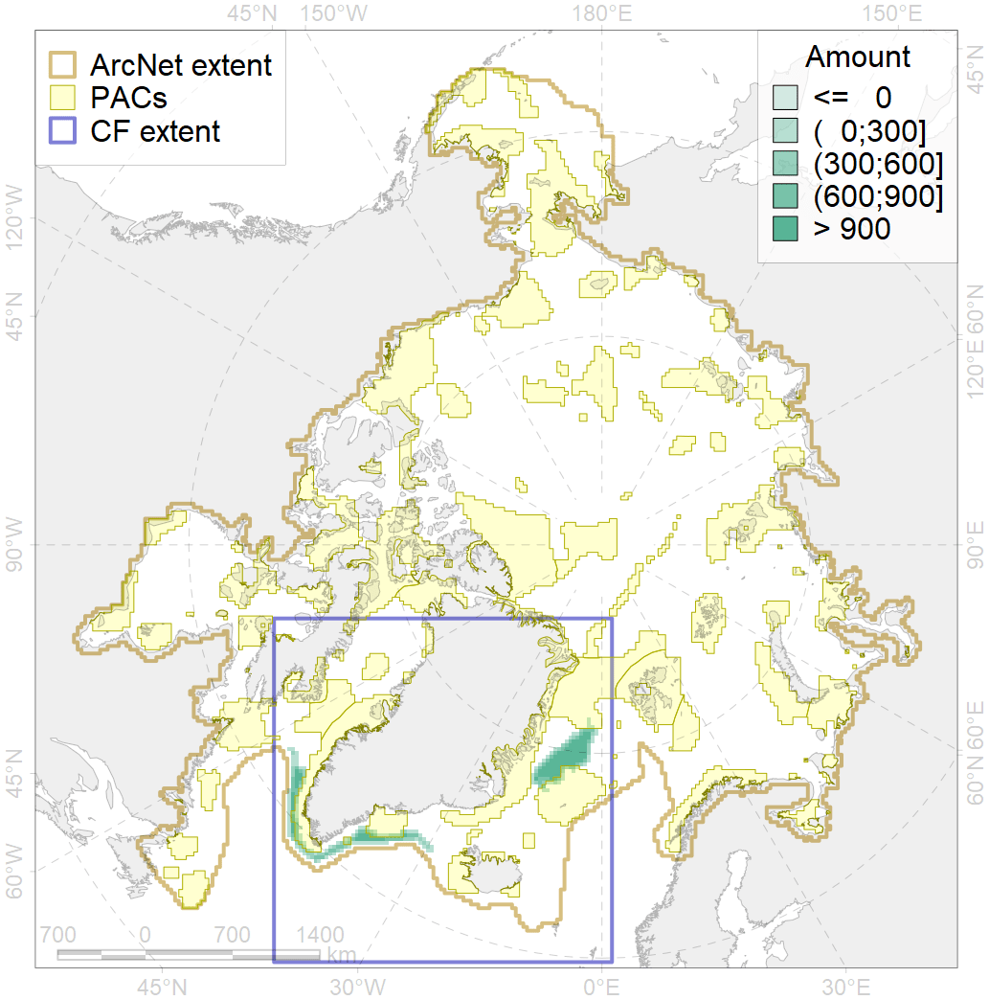
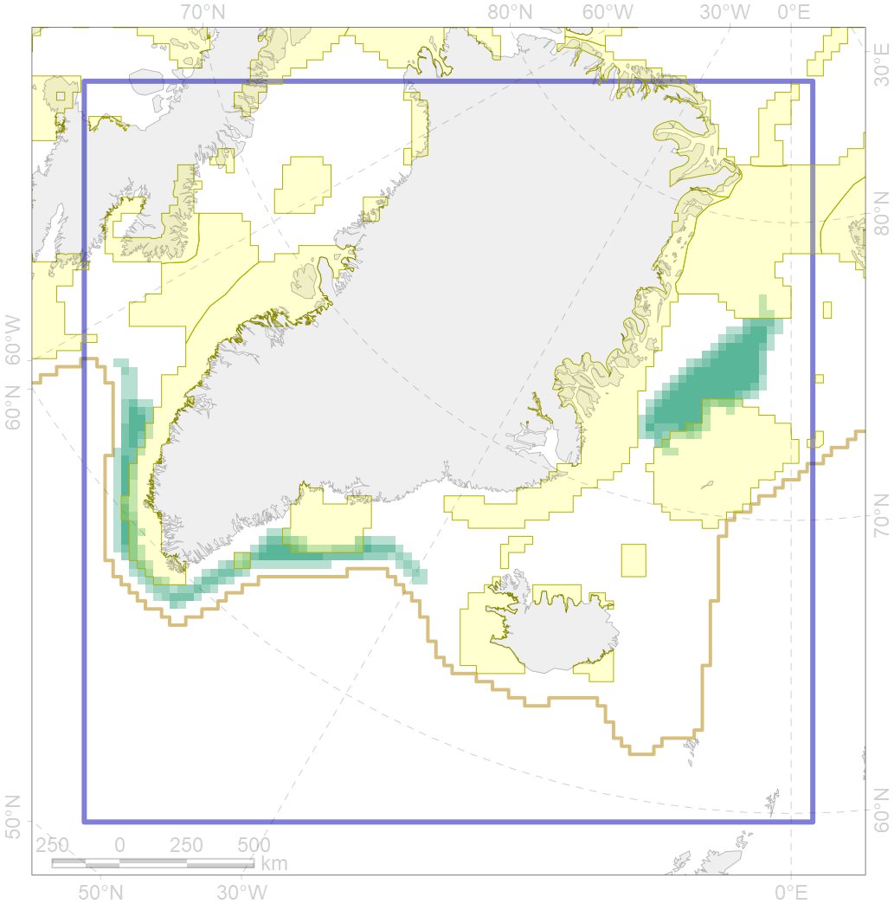

7171

| CF code | 7171 |
| CF name | VII.1. Greenland Sea and Fram Strait Basin basins VII.1.1. Rises (slope foot) |
| Time Period | At least last 100 years |
| Source(s) | Harris et al., 2014; Carmack, Wassmann, 2006 |
| Seasonality | 1-12 |
| Depth Horizon | Sea floor |
| Methodology | Data obtained from the literature |
| Use Restrictions | Open access |
| Author Name | V. Spiridonov, W. Merritt |
| Notes | |
| Scenario’s Target | 0.140338 |
| Target Achievement | 0.169 (Scenario: 120.2%) |
| PAC | Share of the Total Amount within the PAC | Share of the Target Achievement for the ArcNet | PAC’s Contribution to the Target Achievement |
|---|---|---|---|
| 29 | 0.1% | 1.0% | 0.8% |
| 34 | 3.8%3.8% | 23.2%23.2% | 19.3%19.3% |
| 42 | 3.4% | 22.0% | 18.3% |
| 43 | 0.8% | 5.5% | 4.6% |
| 44 | 6.1%6.1% | 31.5%31.5% | 26.2%26.2% |
| inner | 14.3%14.3% | 83.2%83.2% | 69.2%69.2% |
| outer | 85.7%85.7% | 37.0%37.0% | 30.8%30.8% |
| † supplement values are for area consistence whereas principal values are for Accenter compatible gridded stats |